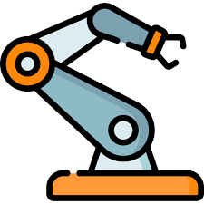
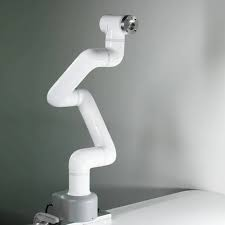
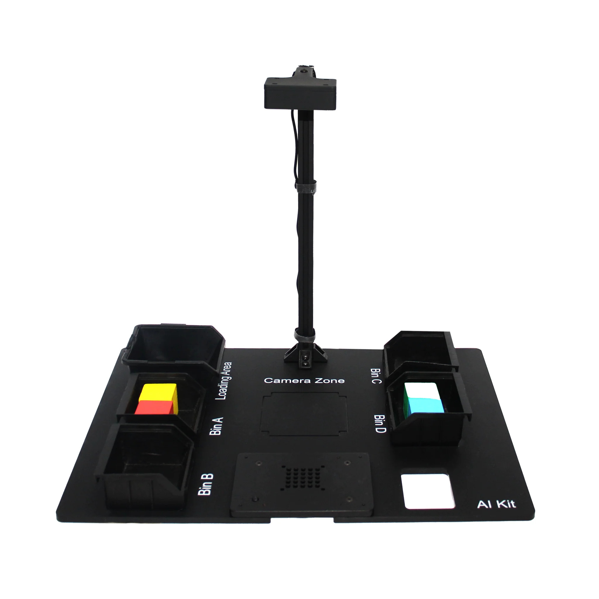
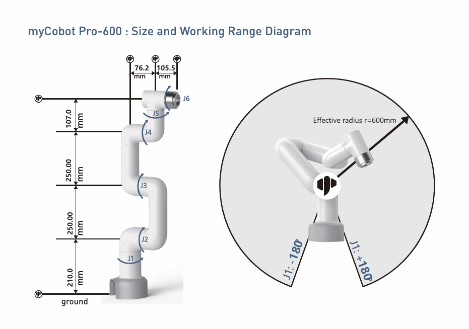
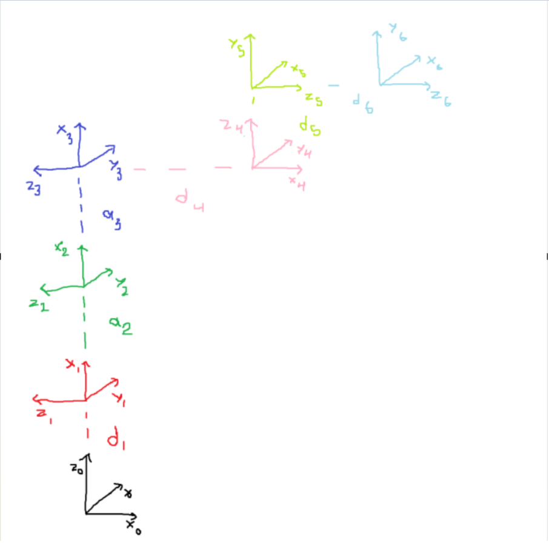
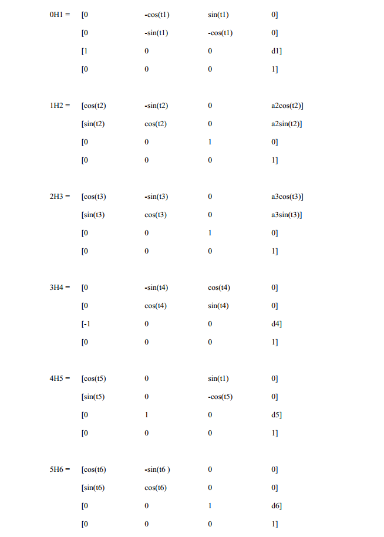
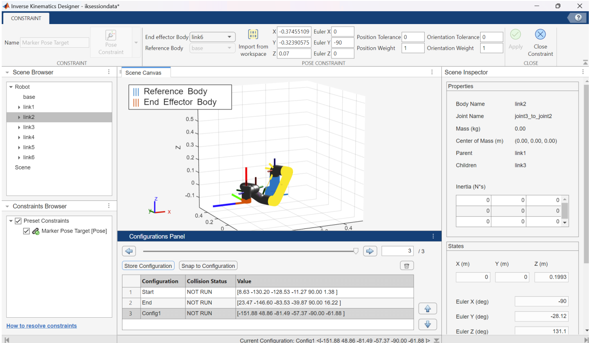

Maze Solving with myCobot Pro 600

Description
The goal of this project is to develop a system that enables the MyCobot Pro 600 to autonomously solve 4x4 rectangular mazes. The robot’s end effector navigates through the maze in straight-line segments, following a computed solution path.
A maze is printed on a physical board placed within the AI Kit camera’s field of view. The input to the system is an image captured by the camera, which is processed to detect the maze structure, identify the entrance and exit, and compute the optimal solution path.
The solution path is represented as a sequence of straight-line motions from entrance to exit. Before execution, the path is visualized in a digital twin of the robot for validation.
The system is designed to generalize to any 4x4 maze generated by the maze generation tool. Once validated, the robot executes the motion plan autonomously using socket-based control.
Equipment


Maze Solving Demonstration
Moving between markers Demonstration
Work Summary
This project uses OpenCV, Python, and Matlab for capturing maze from camera, solving the maze, simulating the robot kinematics, and controlling the cobot.
The work is divided into 3 main parts, getting the maze from camera image, developing algorithm for the robot to solve the maze, calculating robot kinematics to control the robot and demonstrate the solution.
It is simpler for doing with markers. The job is to detect the marker position from camera and calculating robot kinematics to control the robot moving in a straight line from one marker to another.
Forward Kinematics



After finding the transformation matrices, we write them in MATLAB to find the position and orientation of the end-effector.
The final transformation matrix \( ^0H_6 \) is:
\[ \begin{bmatrix} R & t \\ 0 & 1 \end{bmatrix} \]
Here, \( R \) represents the rotation matrix and \( t \) represents the translation vector. So we can find the position (x, y, z) of the end-effector by outputting \( t \).
Inverse Kinematics

We use Matlab Inverse Kinematics Designer to solve this problem. We load the robots into Matlab, choose the BFGS Gradient solver algorithm, and enter our desired positions and orientations.
GitHub Code View Full Report (PDF)